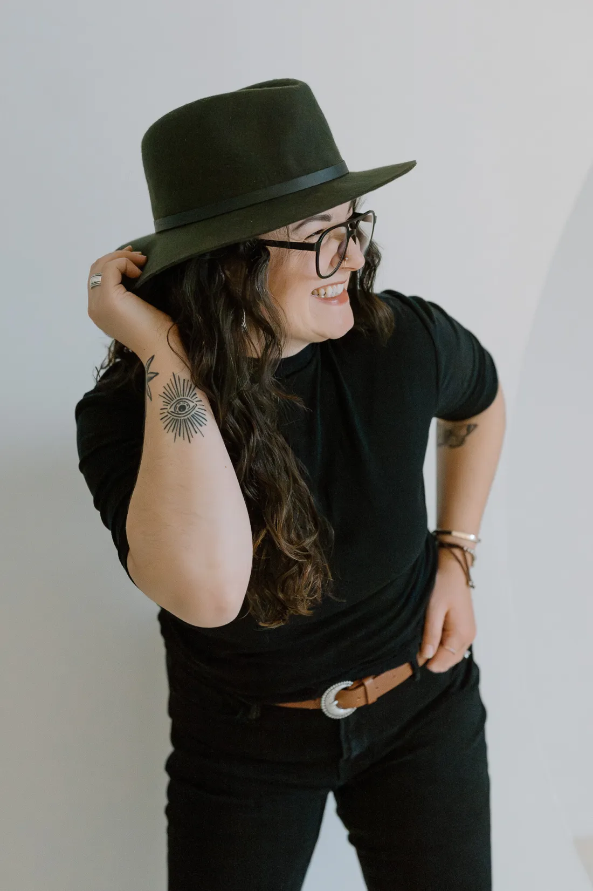
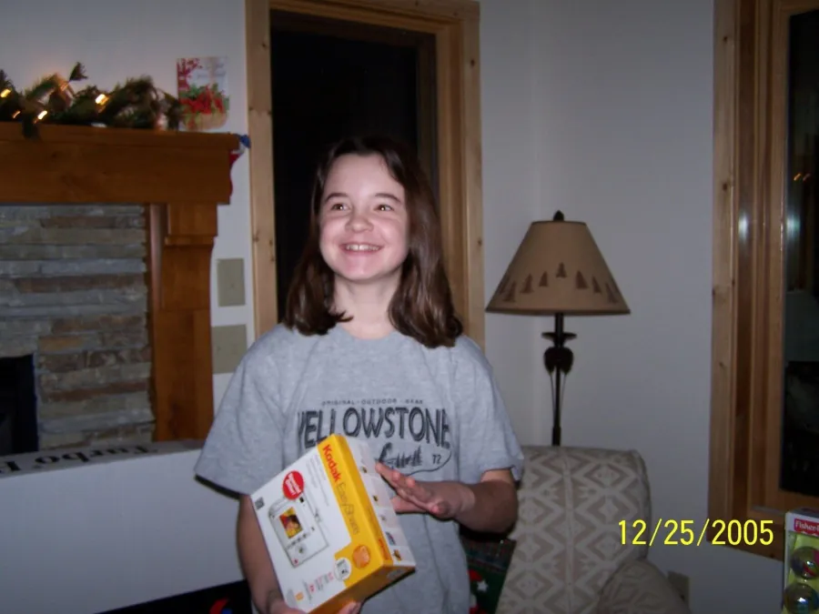
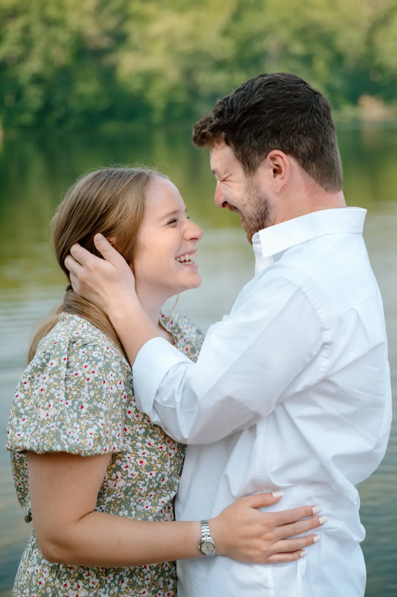

Meet the photographer behind the lens
I'm Aly, and I'm so glad you're here!
Serving couples and families in Minnesota and beyond with timeless, stunning photography.
Start Here
Photography is special in that it preserves a precious moment in time that might otherwise be lost forever.
I first experienced its magic while capturing family memories with a disposable camera, allowing me to relive my favorite road trip moments years later. I want to keep that same magic alive for my clients when I'm photographing their extraordinary milestones and beautifully ordinary seasons of life.
From unforgettable wedding weekends to unique senior portraits to playful family sessions, these are the moments you wish could last forever. Let's permanently capture them with authenticity and joy!
My history in photographs
-

2005
That quintessential moment when a photographer is gifted their first digital camera. Trust me, it was love at first click!
-
2010
I entered the world of social media with my point-and-shoot camera in tow. All duck-faced selfies are (thankfully) a distant memory now.
-
2015
Before studying abroad in Spain, I bought my first DSLR and later captured my roommate's engagement photos, my first photo session!
-
2020
There's nothing like a global pandemic to inspire you to take risks and pursue your passions! I officially launched my business, and the rest is history.
My favorite pairings
Sam & Rocky
Our adopted pup and (the best) foster fail.
Passport & camera
My motto is “Have camera, will travel!”
Coffee shops & breweries
Our favorite weekend stops around the Twin Cities.
Neighborhood walks & state parks
With our dogs in tow, of course!
Road trips & spontaneous planning
Because I'm detail-oriented in every other area of my life.
Kind words
The photos that came from our engagement shoot were the best thing we had ever seen. You can truly feel the love in every photo just by looking at it.
